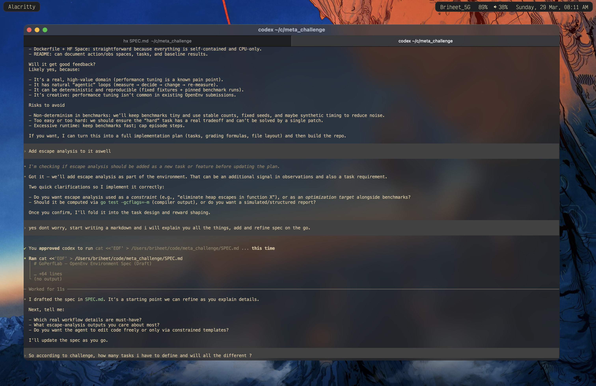

Intro
Hey, how’s it going ? Hope you’re doing well.
Yesterday night i was on discord bing chilling with one of my friend when he told me about this cool hackathon by meta and scaler. I was bored, it was a saturday and i didn’t have anything else to do hence i thought i might give a look wtf is it.
To my suprise, it is so cool. I registered, went through their repo and it was what i was looking for. For some past days, i have been doing performance work writing low latency systems in golang. I also have a blog for it. The thing is, it is quite tiresome, needs good scoping in the system and also a lot of reading and going through stuff.
Also before starting, i am no ML guy hence i would need assistance with python and its dev environment. Hence for this i will be using codex. I’ll try to hand write all things coz yea python english easy, but yea library stuff can be helped by codex i believe. Also i am in the hobbyist category so yea pretty fun stuff for a sunday.
Why RL and how will this help
So i am not a python or machine learning guy, i have very little to do with the ML world but i genuienly like the way it has transformed my life. From past some months, i am trying to fit these real world agents into my workflow, to make myself more efficient.
As a human i can make mistakes reading the numbers, altough we have benchstat in golang. I can also make wrong assumptions or miss some parameters for optimisations like bytes stuff or maybe making repeated slices etc.
I this world of agentic coding, i see less people write code by hand. But when checking the codebase its quite messy, no correct indication, repeated wrong patterns, no profiling, escape analysis, etc
I think this is the place where it can help me to solve this problem. I think with the current knowledge i have, assmebly checks, and the friendlyness of llms in writing golang code, i can do something so that we end up writing good, optimised, better performing code.
Starting out
So yea i got into my text editor helix, and started thinking what i want to really do ? Do i want it to be easy stuff, do i have to be code changes, what should it look like ? Should it be normal workings, should it be crafted ? IDK. Let me think.
Talking to codex, i get that yea this problem can be modelled well enough with different problems and rewards.

Also first let me setup the whole repo. I can see that they have provided a good github repo with nice explaniation here. Also, first i have to check what environment we have. As i see we dont have a performance tunning environment hence lets do that then.
I am thinking about Coding + Git + kernrl. Looks like i can borrow somethings from them and it should suit a lot.
So here is a current flow i have come up with
We will run a **shared Gitea** service (started once) that hosts pre‑migrated repositories. Each task episode spins up an **isolated workspace** and interacts with Gitea via HTTP API to list repos, clone, and run git commands.
┌────────────────────────────────────┐ │ Shared Gitea (start once) │ │ Port 3000 │ │ - Pre-migrated repositories │ └──────────────┬─────────────────────┘ │ HTTP API ┾────────┼────────┾ │ │ │ ┌───▼──┐ ┌──▼───┐ ┌──▼───┐ │Env 1 │ │Env 2 │ │Env 3 │ │Task A│ │Task B│ │Task A│ │@abc │ │@def │ │@abc │ └──────┘ └──────┘ └──────┘
Workflow:
- Start Gitea once per container runtime.
- Use a **single canonical repo** for all tasks.
- For each task episode: create a new **git worktree** (isolated workspace), list repos, clone, and run git commands.
- Benchmarks are pre‑defined in the repo; tasks map to specific benchmark targets.
So basically we get the repo, have a worktree setup. parallely execute all benches given and then future steps. This sounds riduculous but yea we can try something like this. Dont know how will this turn out. At the end we could have a agent fixing up and a pr to the isolated space. Will be helpful with a locally deployed model and let it run. At max the only cost is electricity and some compute roughness.
Cool, got the repo sturcture up. I need to start defining my models. I see i need to setup my Action, Observation and State for the models.
I thought about it overnight, came up with this for now
class GoPerfAction(Action):
# Common stuff
action_type: Literal[
"git", "benchmarks", "tests", "build_flags", "escape_analysis", "perf", "patch"
]
# Git specific stuff
git_op: str | None
git_repo_name: str | None
git_target_dir: str | None
git_workspace: str | None
git_args: List[str] | None
# Benchmarking specific stuff
bench_suite: str | None
bench_mem_required: bool | None
bench_time: int | None
bench_count: int | None
bench_stat: bool | None
bench_file_name: str | None
bench_timeout: int | None # time in seconds
# TODO: Check if we can somehow automate the profiling data and compare
# Tests specific stuff
test_suite: str | None
test_verbose: bool | None
test_timeout: int | None
test_output_save_file: str | None
# Build flags
build_flags: List[str] | None
# Escape analysis
escape_target: str | None
escape_flags: List[str] | None
escape_output_file: str | None
# Perf analysis
perf_mode: Literal["stat", "mem", "c2c"] | None
perf_bench: str | None
perf_args: List[str] | None
perf_output_file: str | None
# Patch
patch_file: str | None
patch_diff: str | None
class GoPerfObservation(Observation):
# Common results
stdout: str = ""
stderr: str = ""
exit_code: int = 0
# Workspace context
repo_name: str | None = None
repo_worktree_path: str | None = None
repo_git_status: dict | None = None
# Task metadata
task_id: str | None = None
task_goal: str | None = None
task_step_count: int | None = None
task_remaining_budget: int | None = None
task_build_flags: List[str] | None = None
# Benchmark results
bench_summary: List[dict] | None = None
benchstat_summary: dict | None = None
# Tests
test_passed: bool | None = None
test_failures: List[str] | None = None
# Escape analysis
escape_summary: List[dict] | None = None
escape_count_total: int | None = None
# Perf
perf_summary: dict | None = None
class GoPerfState(State):
workspace_path: str | None = None
repo_name: str | None = None
repo_revision: str | None = None
worktree_id: str | None = None
baseline_metrics: dict | None = None
current_metrics: dict | None = None
last_action: dict | None = None
action_history: List[dict] | None = None
task_config: dict | None = None
reward_trace: List[dict] | None = None
budget_remaining: int | None = None
build_flags: List[str] | None = None
perf_artifacts: List[str] | None = None
escape_artifacts: List[str] | None = None
I think i can make this better, more scoped. But i guess that should be afterwards. I feel tweaking should be done after we somehow recieve something baseline to work.
Did end up submitting, will complete this next sunday : )
>> Home